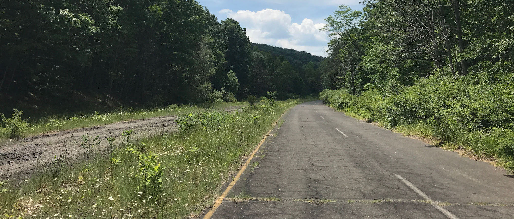
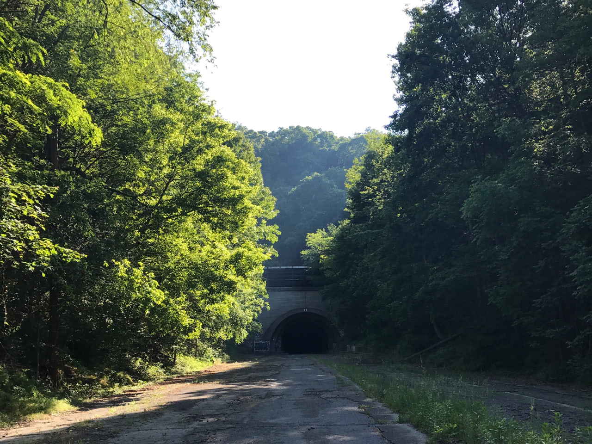
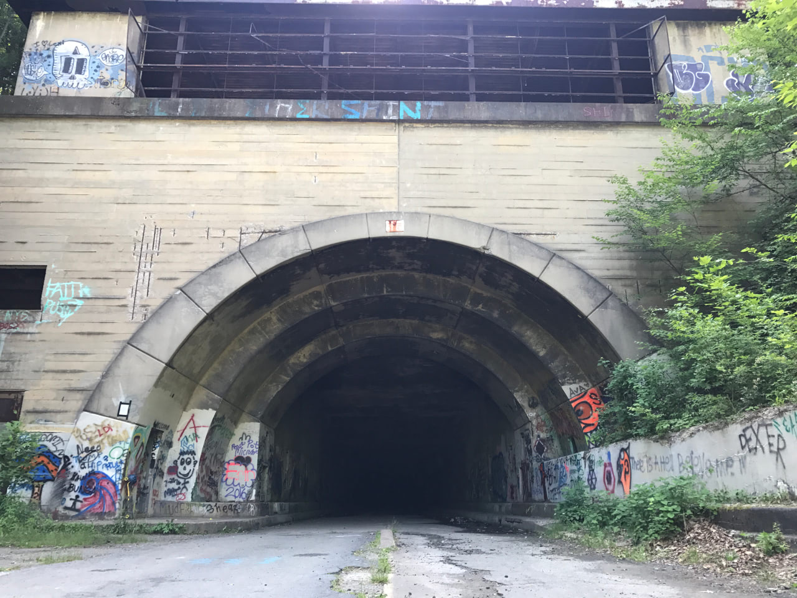
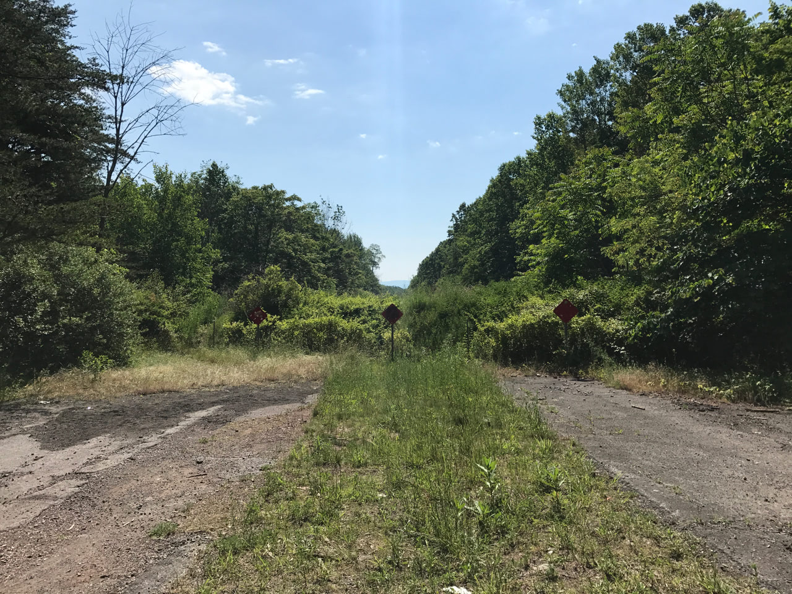
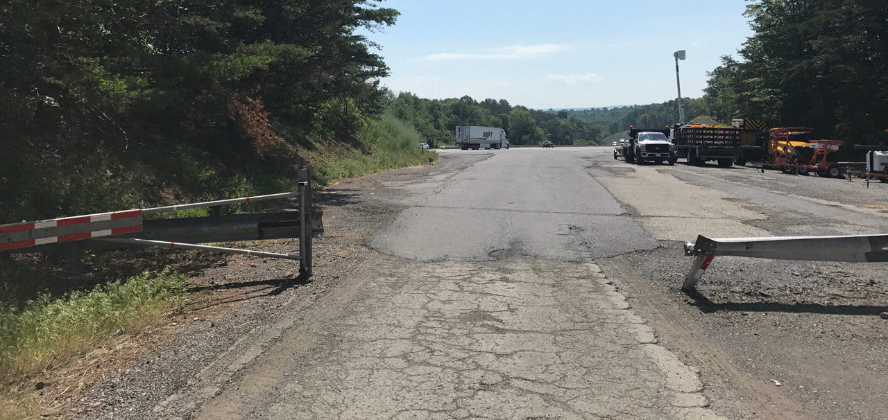
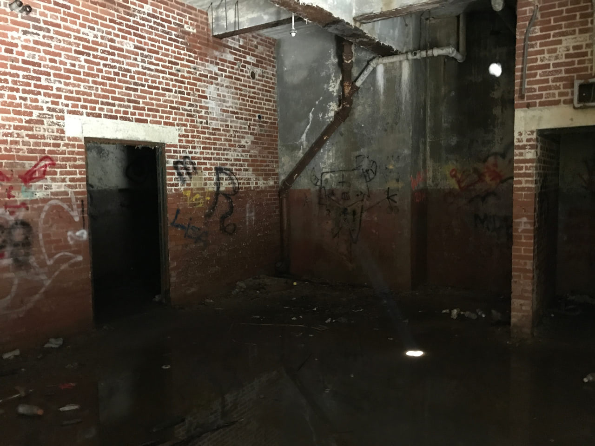

The Abandoned Pennsylvania Turnpike
Jun 12, 2017 • 10.4 miles
A new bypass on the Pennsylvania Turnpike opened in 1968, redirecting traffic from an 11-mile stretch of the original roadway. The Turnpike Commission eventually sold that stretch to a conservancy for a dollar. Since then, most of that stretch has (unofficially) served as a multi-use path, mostly for bikes. I of course decided to skateboard the entire length, from the southern trailhead in Breezewood to where it merges with the active turnpike, including the two tunnels inbetween.
I started early in the morning from Breezewood, an obese rest stop masquerading as a small town. The new bypass coincided with a new freeway, I-70, both of which converged at this unfortunate point. The whole thing is so convoluted, it’s compelled The New York Times to write about it at least three times. There’s a tiny piece of the abandoned turnpike south of the trailhead here, but it looked like a resting place for dead trucks on Google Maps and I didn’t bother.
Almost immediately, I felt the full “abandoned” effect. Two lanes in each direction, separated by an overgrown median, with cracks and potholes and weeds. Every once in a while, a peek at the Alleghenies through a clearing in the trees. And no sound other than birds and the wind. Everything I read about the trail liked to point out that it’s where The Road was filmed, but it didn’t look post-apocalyptic in the morning sunlight. The first stretch was only slightly uphill, and the pavement conditions were better than expected. When one section got rough, I could usually hop over the median where it was better on the other side. I made it to the first tunnel pretty quickly.
It’s clear the two tunnels along this road are the main attractions. The first is Rays Hill Tunnel, a dark semicircle cut out of the mountainside that appears after a bend. The entry face is covered in the same graffiti as the rest of the trail: anti-this, anti-that, and hundreds of penises. From the mouth, I could see the light at the other end — Wikipedia says it’s about 1km long — though it was still very necessary to use a headlamp. The pavement inside both tunnels was the smoothest of the entire trail, except for where chunks of wall or ceiling had crumbled to the ground.
The stretch between the tunnels was a decent downhill, and the roads were good enough that I could control my speed by gently carving back and forth, again recalling Walter Mitty from the one scene in its trailer that I remember. For the entire length of the trail from Breezewood north to the active turnpike, I saw no other people. There was one deer, off in the distance, that disappeared into the forest before I reached it.
The second tunnel, Sideling Hill Tunnel, is twice as long and ten times as spooky. No visible light at the end for most of it. A constant drip of water coming out of a leak in the ceiling near the beginning. And once I was far enough in, if I stood still, even the silence seemed to echo. The skateboard was super loud and rattly otherwise, amplified by the tunnel’s acoustics.
Again, my headlamp was a godsend, illuminating enough of the couple feet in front of me to keep me heading straight and avoid any junk on the ground. It also created opportunities for the tunnel to freak me out—as once-operating freeway, there were of course little reflectors embedded in lane markers. Most of them are gone now, but every once in a while one in the distance would beam back at me like an eye. And every time, I’d go through the possibilities: bear, ghost, standing water filling up a sinkhole that will swallow me. Just as I was getting used to the ones on the road, another would pop out from the walls, in a little recess that maybe was for a fire extinguisher or call box (I don’t know). I gasped so hard at one of those that my hot humid breath turned to steam in the cold tunnel, whooshing by the beam of the headlamp.
The last bit of Sideling Hill Tunnel goes under the current active turnpike, though I couldn’t hear it at all. After that, it was another nice downhill stretch that passed an abandoned rest stop off the westward lanes. It’s a large expanse of open flat concrete, with an overgrown island of trees and shrubs in the middle. I foraged a couple steps in and saw one or two chunks of the old plaza’s foundation, and nothing much else. And then only a little way farther, the trail came to an abrupt end.
This was much sooner than I expected, so I hopped the fence and scrambled down an embankment to a small country road below. (Apparently, the turnpike used to take a bridge over this road.) The trail clearly picked up again on the other side of the road, though this time beyond giant PRIVATE ROADWAY signs. Nevertheless, I went through the ineffective gate and continued. This stretch was in noticeably worse shape, and I had to walk a lot of it. Despite the slower pace, it didn’t take much time before I reached another dead end. This time, it looked like a slightly elevated country road was paved over the abandoned turnpike after it closed. Still undeterred, I climbed the embankment, crossed the road, and descended…to a farm.
The trail once again picked up on the other side of the road, though I had to pass a chicken coop to get back on it. This was by far the worst stretch, with torn-up asphalt and downed trees, that eventually gave way to the current, active turnpike.
it was seriously this small gate and then right into 70mph traffic
The Turnpike Commission stores trucks and other equipment, plus road debris like branches, along this ramp. There was a cop car parked at the merge point, either setting a speed trap or watching for tresspassers like me, so I took a photo and hastily turned around. Indeed, as I learned while writing this, all the land from the first dead end to here is private property and not to be skateboarded on. Whoops.
Is it a commonly-known phenomenon that the first time you do something feels like it takes longer than any subsequent time? That was certainly the case for my return journey, even if it was into a mild headwind. I took a break at the former rest stop on the way back for lunch, which seemed appropriate. Approaching the longer tunnel on the way back, the headwind turned into a twenty-foot-wide gust of supercooled air, kind of like feeling a store’s air conditioning spill onto the street, only way more massive.
Before I started back through the tunnel, I saw three people coming down the side of the mountain, having just explored the control room at the top. These are also “strictly off limits” unless you’re with a guided tour, so I didn’t feel too compelled to look in. I imagine it’s not much different than the locked access rooms at the ground level. You stick your head through the window, admire the graffiti and water damage, and keep moving.
About a third of the way back through this tunnel, I saw a pinpoint of light in the distance. Obviously, it was another person wearing a headlamp, approaching from the other end, but what if it wasn’t? It was completely dark so I couldn’t see any shape around the light, and it steadily grew bigger and closer. This is the kind of thing I’d roll my eyes at in a movie, and yet I was so nervous in real life. Then it turned out to of course be a guy on his bike, and we passed each other without a word. Maybe he felt the same way.
What were fun downhills on the way out were arduous uphills on the way back, with the headwind and stronger sun. I saw a couple more people, including two other guys who passed me on their bikes. “Skateboard?” “Yep.” “Okay.” Then a much more relaxed passage through the shorter tunnel, serving as a little bit of air cooling more than anything else, and a gentle downhill back to the trailhead.
This was all very cool to experience, especially to see all the green mountain topography after living in relative flatness for a while. All of the trail open for recreational use is definitely doable by skateboard, for anyone else wanting to explore. Or bike, or walk! I say it’s worth it, even if you have to drive through Breezewood.